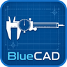

Projects
Software and tools I’ve built — desktop apps, games, and utilities. Several are playable free in your browser; all can be downloaded. My résumé is at the bottom.
Featured apps
My biggest builds — full desktop installers, several playable right in your browser.
LearnLinux+
An interactive app for learning Linux toward the CompTIA Linux+ (XK0-005) exam. It simulates a Linux shell and filesystem entirely in memory — experiment freely with zero risk to your real machine — with 62 guided lessons, a free-play sandbox, adaptive quizzes, and a scored practice exam.
Download installer ↓The Judge
A 3D asset-triage tool for game developers. Fly through your rendered, textured game assets in a courtroom-themed viewer and label each one by art style — realistic, stylized, low-poly, voxel, and more — with quick number-key "verdicts." It judges per asset (not per file), shows models at true scale beside a human-height reference, and logs every verdict to CSV/JSON. Built with Electron.
Download installer ↓
BlueCAD
A 2D CAD app for drawing precise shapes with exact dimensions — snapping, mm/inch units, undo/redo, JSON save/load, and SVG export. Built with Electron.
G-Code Trainer
A desktop app that teaches CNC G-code through lessons paired with a live toolpath simulator. Built with Electron + React.
Games
Machinist & shop tools
Number & math tools
Fractal Generator
Generates fractal images and patterns — explore the math of self-similarity.
Download ↓